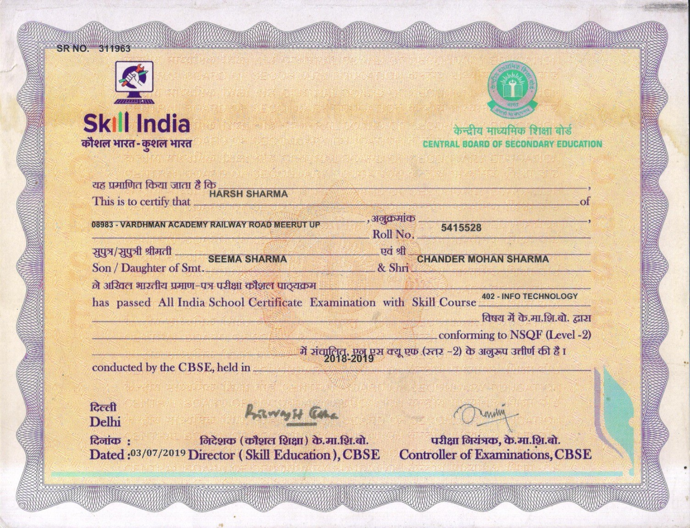
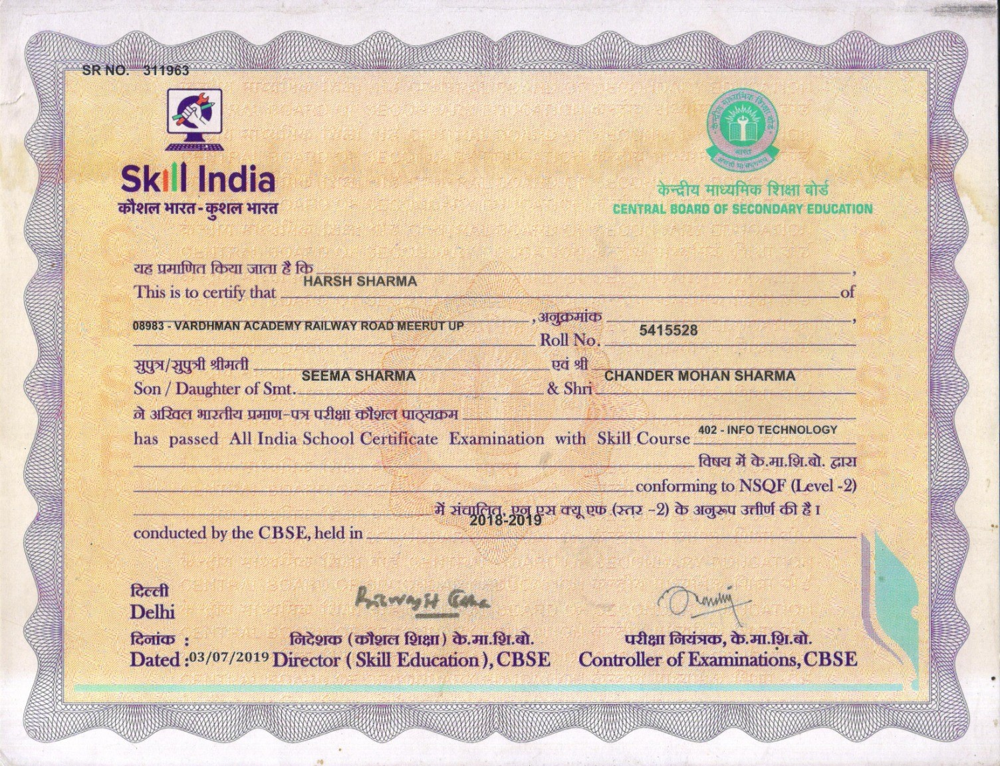

About Me
💡 Hello! I'm Harsh Sharma (Data Analyst), a dedicated and motivated individual with a strong passion for Data Analytics and Data Science.
✓ I am skilled in Python, SQL, and Power BI, with hands-on experience in data cleaning, transformation, visualization, and
business analytics.
✓ I enjoy uncovering patterns in data and designing interactive dashboards that transform raw information into meaningful
insights to support smarter, data-driven decisions.
Experience
✓ 📊 One Month Internship as a Data Analyst Intern at InnoByte Services
✓ 💻Hands on Experience :- Python, Pandas, numpy, Matplotlip, Jupyter, PyCharm, SQL, Power BI, Ms Excel, Ms Word.
✓ 🤖AI Tools :- Julius, Genspark, Quadratic, Cursor.
Skills
- Python
- Panda
- numpy
- Matplotlib
- SQL
- Ms Excel
- Ms Word
- Power BI
- C Programing
- Strong DSA
- HTML5
- CSS3
- Git & GitHub
Soft Skills
- Skilled at interpreting complex data and turning it into actionable insights.
- Ability to understand technical concepts and convey them in simple terms.
- Excellent teamwork and cooperation skills.
- Strong analytical and problem solving-skills
Projects
Amazon Sales Data Analysis
Analyzed 1 year of Amazon sales data (orders, revenue, categories, fulfillment, and regions). Performed data cleaning & transformation to prepare dataset for analysis. Delivered business insights such as top-performing categories, best regions, and return/cancellation patterns. Helped identify key growth areas and provided recommendations for sales strategy
AI VOICE ASSISTANT
Developed an Al-powered voice assistant capable of understanding voice commands, performing tasks like opening applications, browsing platforms, playing music, weather, current time and providing responses in real time
Power BI - Pizza Bakery Sales Dashboard
Designed and developed an interactive Power BI dashboard for a Pizza Bakery, analyzing one year of sales data to track revenue trends, popular items, and customer preferences, enabling data-driven business insights
Education
Gallery
 

Contact Me
You can reach me through my Linktree profile below:
Visit My Linktree